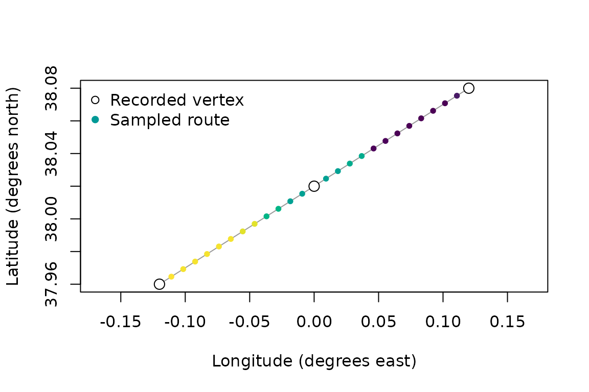
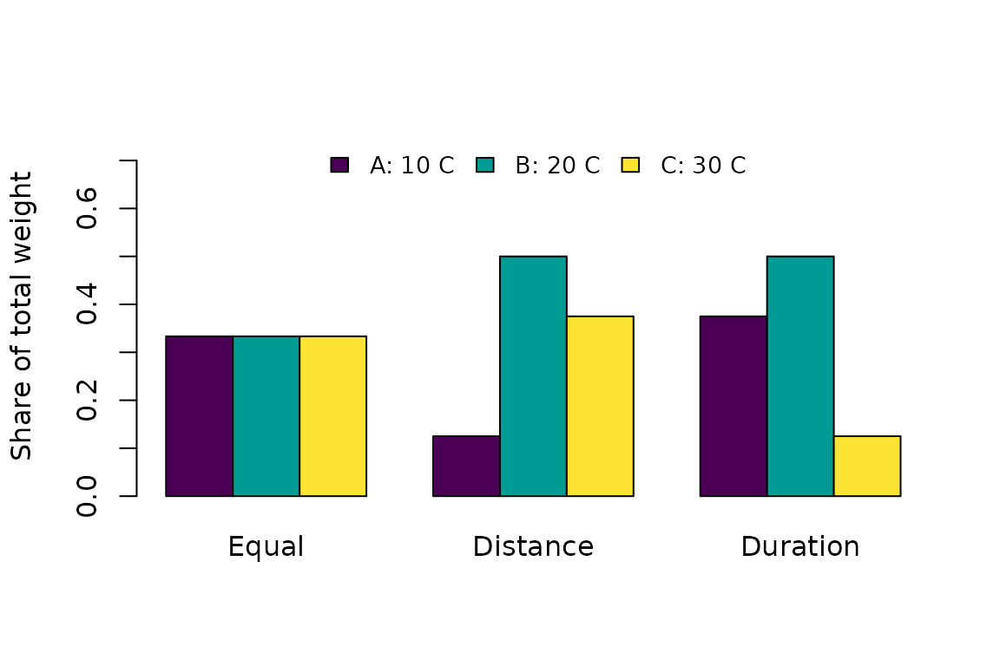
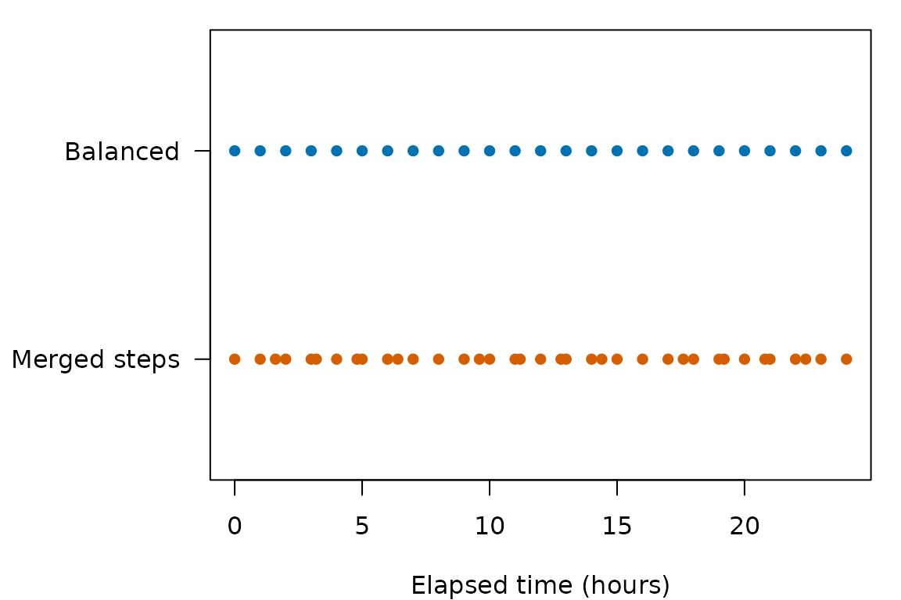
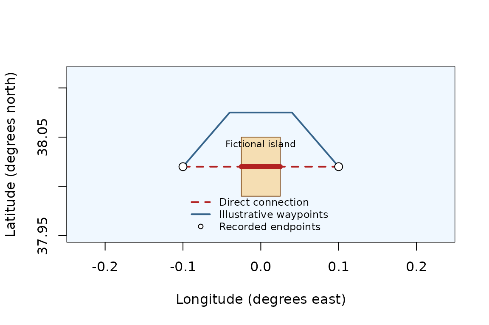
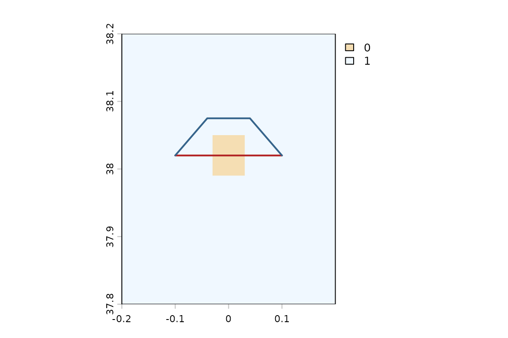

Extracting environmental data along tracks
Source:vignettes/articles/extracting-environmental-data-along-tracks.Rmd
extracting-environmental-data-along-tracks.RmdA marine observation may describe a journey rather than a single location. A trawl moves through several grid cells during a haul. An animal tracked at intervals may also encounter different conditions between its recorded positions. Assigning one temperature to the midpoint can miss this variation.
However, the line connecting two positions is an assumption. We do not know that an animal followed the shortest route, moved at a constant speed or changed depth steadily. Those choices should be visible in our analysis.
What environmental conditions occur along a trajectory, and how do our sampling and interpolation assumptions change its summary?
In this tutorial we use extract_to_track() to follow a
fictional trawl, compare observed vertices with samples between them,
and then explore a track whose depth and time change. The temperatures
come from the same small, real Copernicus Marine subset used in the point extraction
tutorial. The trajectories are fictional teaching examples, not
observed fishing or animal movements. No downloads or credentials are
needed.
Three modes answer different questions: use recorded vertices (the default), sample an assumed route at explicit intervals, or split the route into intervals at crossed grid boundaries. In every mode, environmental values are selected using the existing point rules; they are never interpolated.
Our research question
Imagine a trawl haul recorded at three locations. We want to describe the deeper environmental conditions along its path, rather than use a single representative point. We also want to know how much of that requested route has a valid environmental value.
Here, method = "bottom" means the deepest valid model
layer at each sampled position. It does not establish the actual seabed
depth or prove that this was the depth occupied by the fishing gear.
Getting started: preparing our data
Run the code from the repository’s vignettes/articles/
directory, as when building this article. The example netCDF and its
attribution accompany the point article in point-data/.
Drawing helpers in buffer-data/ are shared with the buffer
tutorial; all extractions use the public package functions.
library(ocean3d)
nc_file <- file.path("point-data", "temperature-points.nc")
source(file.path("buffer-data", "figures.R"))
haul <- data.frame(
haul = "haul_A",
lon = c(-0.12, 0, 0.12),
lat = c(37.96, 38.02, 38.08),
date = as.Date("2026-09-20")
)
haul
#> haul lon lat date
#> 1 haul_A -0.12 37.96 2026-09-20
#> 2 haul_A 0.00 38.02 2026-09-20
#> 3 haul_A 0.12 38.08 2026-09-20Rows are in traversal order. The function never sorts a route by
date. With multiple tracks, track_col identifies which
positions belong together. Missing coordinates are rejected so an
unknown gap cannot silently become a connecting segment.
Step 1: Extracting at the recorded positions
First, use only the supplied vertices. This provides the same
environmental selection as applying extract_to_point() to
those coordinates.
observed <- extract_to_track(
data = haul, nc = nc_file, var = "thetao", track_col = "haul",
sampling = "vertices", method = "bottom",
output_col = "temperature", quiet = TRUE
)
observed$samples[c("track_id", "source_row", "lon", "lat", "temperature")]
#> track_id source_row lon lat temperature
#> 1 haul_A 1 -0.12 37.96 13.80234
#> 2 haul_A 2 0.00 38.02 13.76159
#> 3 haul_A 3 0.12 38.08 13.72215The result contains three objects:
-
samples: the positions queried, their support along the track, and values. -
summary: one row per track and output, with coverage and requested statistics. -
settings: sampling assumptions and candidate source files. These are not claims about which individual file supplied each value.
The summary never replaces the individual results. For example, we
can save observed$samples as a table and inspect or analyse
each selected temperature, just as we would after point extraction.
observed$samples[c("sample_id", "lon", "lat", "temperature")]
#> sample_id lon lat temperature
#> 1 1 -0.12 37.96 13.80234
#> 2 2 0.00 38.02 13.76159
#> 3 3 0.12 38.08 13.72215
# To save the individual results when running this tutorial manually:
# write.csv(observed$samples, "haul_sample_temperatures.csv", row.names = FALSE)Step 2: Sampling the path between vertices
There are four ways to decide where environmental values are requested:
sampling |
Positions queried | When it is useful | Example case |
|---|---|---|---|
"vertices" |
Only the supplied observations; the default without steps. | Preserve the original sampling. | Attach conditions to recorded tag locations without assuming intermediate positions. |
"balanced" |
One shared subdivision satisfying distance, depth and elapsed-time limits. | Respect every maximum without adding redundant step grids. | Sample an assumed dive between tag records, limiting changes in kilometres, metres and hours together. |
"merged_steps" |
Combine distance/depth cuts with temporal cuts. | Retain both step grids, including close neighbours. | Check how adding time-driven queries changes the results of a depth-sampled dive. |
"cells" |
Midpoints of intervals defined by crossed cells and changes of layer or time. | Represent crossed grid intervals, including return visits. | Describe the environmental cells crossed by a trawl, retaining separate visits when it returns to a cell. |
Every inserted position belongs to the same assumed trajectory. These modes change where it is queried, not which route the animal is assumed to follow. They do not interpolate environmental values.
Balanced sampling inserts positions along the connecting route. Here, adjacent samples are at most one horizontal kilometre apart. This distance is a maximum: the function keeps all supplied vertices and divides each original segment into equal parts, so some intervals are shorter.
route <- extract_to_track(
data = haul, nc = nc_file, var = "thetao", track_col = "haul",
sampling = "balanced", spacing_km = 1, method = "bottom",
statistics = c("mean", "sd", "se", "min", "max"),
output_col = "temperature", quiet = TRUE
)
head(route$samples[c(
"sample_id", "source_row", "is_interpolated", "distance_km", "temperature"
)])
#> sample_id source_row is_interpolated distance_km temperature
#> 1 1 1 FALSE 0.0000000 13.80234
#> 2 2 NA TRUE 0.9591421 13.80234
#> 3 3 NA TRUE 1.9182842 13.80067
#> 4 4 NA TRUE 2.8774263 13.80067
#> 5 5 NA TRUE 3.8365684 13.80067
#> 6 6 NA TRUE 4.7957105 13.80067
route$summary
#> track_id output_column weighting n_samples n_observed n_assumed n_valid
#> 1 haul_A temperature distance 27 3 24 27
#> valid_fraction total_distance_km total_duration_seconds effective_n status
#> 1 1 24.93047 0 26.5098 complete
#> mean sd se min max variation_status
#> 1 13.76075 0.0343227 0.006666197 13.71589 13.80234 availableCounting observed and assumed positions
The result records how much sampling was added for each track:
route$settings$sampling_counts
#> track_id n_observed n_assumed n_samples
#> 1 haul_A 3 24 27
route$summary[c("track_id", "n_observed", "n_assumed", "n_samples", "n_valid")]
#> track_id n_observed n_assumed n_samples n_valid
#> 1 haul_A 3 24 27 27n_observed counts supplied vertices;
n_assumed counts inserted positions; n_samples
is their total. n_valid belongs to each environmental
output and counts values eligible for its summary. Missing results and
invalid marine connections do not erase positions from the sampling
counts. In cells mode, the assumed positions are interval midpoints, not
new observations.
settings$sampling_counts has one row per track, however
many variables are extracted. It remains available with
statistics = NULL. The summary repeats these track counts
for each output; they should not be added across outputs. No extra
console report is printed for every generated position.
source_row identifies a supplied vertex. An inserted
position has is_interpolated = TRUE and
source_row = NA: it is not a new observation.
Non-coordinate vertex attributes are also NA between
observations. The generated track_id remains available for
every sample.
This interpolates the path, not the temperature.
Each inserted location is passed to extract_to_point() with
the usual cell, depth and time selection rules. Several nearby samples
can therefore select the same environmental value. No interpolation
between environmental grid values has been performed.
A one-kilometre spacing can select the same grid cell several times. That is expected: these are positions along the route, not a list of unique cells. Conversely, a route can cross a narrow corner of a cell between samples without ever querying it. Smaller spacing reduces this risk but cannot guarantee that every intersected cell is represented.
One result per crossed cell would be a different sampling mode, not simply removing duplicate temperatures. Two cells can have the same temperature; the same cell can also be visited again at another depth or time. Those visits may represent different environmental conditions and must not be silently collapsed.
plot_track_map(route$samples, observed$samples)
Figure 1. Recorded vertices and the sampled route. Inserted positions represent an assumed path; colour shows the selected deeper temperature.
Positions follow shortest WGS84 geodesics. Distances are horizontal; they do not include vertical travel. Routes near the antimeridian follow the short connection. Antipodal endpoints need an intermediate waypoint.
Without a sampling request, only the original vertices are used.
Supplying spacing_km explicitly requests balanced sampling.
No grid-based spacing is silently inferred. You can also set
sampling = "balanced" with a depth or time step, use
sampling = "merged_steps" to retain both sets of step cuts,
or use sampling = "cells" for grid intervals. All original
vertices are retained. Equal spacing is defined within each original
segment; adjacent segments may have different spacing.
Following crossed cells, including repeat visits
crossed <- extract_to_track(
haul, nc_file, var = "thetao", track_col = "haul",
sampling = "cells", method = "bottom", output_col = "temperature",
quiet = TRUE
)
intervals <- subset(crossed$samples, sample_kind == "cell_interval")
head(intervals[c("segment_id", "segment_start_fraction",
"segment_end_fraction", "support_km", "temperature")])
#> segment_id segment_start_fraction segment_end_fraction support_km temperature
#> 2 1 0.0000000 0.1320392 1.646377 13.80234
#> 3 1 0.1320392 0.4793714 4.330832 13.80067
#> 4 1 0.4793714 0.6664387 2.332513 13.79823
#> 5 1 0.6664387 0.8265072 1.995870 13.76961
#> 6 1 0.8265072 1.0000000 2.163255 13.76159
#> 8 2 0.0000000 0.1737298 2.164954 13.76159
crossed$summary
#> track_id output_column weighting n_samples n_observed n_assumed n_valid
#> 1 haul_A temperature distance 13 3 10 10
#> valid_fraction total_distance_km total_duration_seconds effective_n status
#> 1 1 24.93047 0 8.742824 complete
#> mean variation_status
#> 1 13.76144 not_requestedEach interval uses the midpoint of the portion inside the selected
cell. Its weight is the full interval’s distance or duration. Original
vertices are also retained, labelled observation, with zero
interval support. They do not add extra weight to the cells-mode
summary. Returning to a cell on a later segment remains a separate
visit. Changes in selected depth or timestamp can also divide an
interval. Separate original segments remain separate even if their
selected environmental record is identical.
Intersections are calculated numerically for rectilinear grids and the existing selection rules. They do not reconstruct the physical averaging period represented by a timestamp. Cells mode currently requires spatial within matching and standard temporal precision; use vertices or balanced sampling for spatial nearest matching or custom temporal precision. Overlapping sources with different horizontal grids must first be aligned explicitly, or used with balanced sampling; this avoids guessing where the winning source changes between incompatible grids.
The per-output diagnostic gives the record actually selected:
crossed$samples$temperature_match_info[[1]]
#> $status
#> [1] "selected"
#>
#> $variable
#> [1] "thetao"
#>
#> $source_file
#> [1] "point-data/temperature-points.nc"
#>
#> $longitude
#> [1] -0.1249998
#>
#> $latitude
#> [1] 37.97917
#>
#> $lon_index
#> [1] 2
#>
#> $lat_index
#> [1] 4
#>
#> $depth_m
#> [1] 398.5447
#>
#> $timestamp_utc
#> [1] "2026-09-20 UTC"
#>
#> $time_index
#> [1] 2
#>
#> $distance_km
#> [1] 2.175977
#>
#> $time_displacement_days
#> [1] 0settings$candidate_sources lists files considered. In
contrast, each temperature_match_info describes the file,
cell, layer and time that actually supplied that sample. A missing
output has no assigned selected source. This avoids attributing an
extracted value to the first input file.
Step 3: Understanding the summary weights
Before choosing a mean, decide what should have equal importance: each sampled position, each kilometre travelled, or each minute spent on the route. The same selected temperatures can give different means because these are different scientific questions.
Equal weight: what is the average sampled value?
With weighting = "equal", every sampled position
receives the same weight. This is the ordinary arithmetic mean. It can
be useful when each supplied observation should count equally. With
irregular sampling, a densely recorded part of a track has more
influence even if it represents little distance or time.
Distance weight: what conditions describe the travelled route?
With weighting = "distance", a sample represents half
the distance to the previous sample plus half the distance to the next.
An endpoint receives only its adjacent half-segment. These lengths add
to the entire requested track length.
For example, if three consecutive samples are at 0, 1 and 4 km, their distance supports are 0.5, 2 and 1.5 km. The middle sample receives half the first kilometre plus half the next three kilometres. The weights sum to 4 km, not three samples.
head(route$samples[c("sample_id", "distance_km", "support_km")])
#> sample_id distance_km support_km
#> 1 1 0.0000000 0.4795710
#> 2 2 0.9591421 0.9591421
#> 3 3 1.9182842 0.9591421
#> 4 4 2.8774263 0.9591421
#> 5 5 3.8365684 0.9591421
#> 6 6 4.7957105 0.9591421
sum(route$samples$support_km)
#> [1] 24.93047
route$summary$total_distance_km
#> [1] 24.93047The mean uses those lengths as weights. This is a numerical
approximation to conditions along the route. It differs from the area,
depth thickness and duration weights used by
extract_to_buffer().
Duration weight: what conditions describe time spent along the route?
With weighting = "duration", the same half-interval rule
uses elapsed time. If our three samples were recorded at 10:00, 11:30
and 12:00, their supports would be 45, 60 and 15 minutes. The track
spends 90 minutes in its first kilometre and only 30 minutes in its next
three kilometres. A mean describing time spent should therefore differ
from a mean describing distance travelled.
Durations are measured between actual UTC instants. They are not counts of dates or environmental timestamps. A stationary animal can have positive time support even when its horizontal distance support is zero.
The same three temperatures, three different answers
The following small numerical example illustrates the weights independently of our Copernicus data. The temperatures are invented teaching values.
weight_example <- data.frame(
sample = c("A", "B", "C"),
temperature = c(10, 20, 30),
distance_support_km = c(0.5, 2, 1.5),
duration_support_minutes = c(45, 60, 15)
)
knitr::kable(weight_example)| sample | temperature | distance_support_km | duration_support_minutes |
|---|---|---|---|
| A | 10 | 0.5 | 45 |
| B | 20 | 2.0 | 60 |
| C | 30 | 1.5 | 15 |
weight_comparison <- data.frame(
question = c("Average sample", "Average kilometre", "Average minute"),
weighting = c("equal", "distance", "duration"),
mean_temperature = c(
mean(weight_example$temperature),
weighted.mean(weight_example$temperature, weight_example$distance_support_km),
weighted.mean(weight_example$temperature, weight_example$duration_support_minutes)
)
)
knitr::kable(weight_comparison, digits = 2)| question | weighting | mean_temperature |
|---|---|---|
| Average sample | equal | 20.0 |
| Average kilometre | distance | 22.5 |
| Average minute | duration | 17.5 |
Equal weighting gives 20 degrees C, distance weighting 22.5 degrees C, and duration weighting 17.5 degrees C. No temperature was changed: only what each temperature represents in the mean.
weight_shares <- cbind(
Equal = rep(1 / 3, 3),
Distance = weight_example$distance_support_km /
sum(weight_example$distance_support_km),
Duration = weight_example$duration_support_minutes /
sum(weight_example$duration_support_minutes)
)
barplot(
weight_shares, beside = TRUE, col = grDevices::hcl.colors(3, "Viridis"),
ylim = c(0, 0.75), ylab = "Share of total weight",
legend.text = c("A: 10 C", "B: 20 C", "C: 30 C"),
args.legend = list(x = "top", horiz = TRUE, bty = "n", cex = 0.85)
)
Figure 2. The three sampled temperatures receive different shares of the total weight. A, B and C are the same samples in all three comparisons.
Applying each choice to our real-data example
We already have the distance-weighted result. First compare it with equal weighting, keeping the same positions and environmental selections.
equal <- extract_to_track(
data = haul, nc = nc_file, var = "thetao", track_col = "haul",
spacing_km = 1, method = "bottom", weighting = "equal",
output_col = "temperature", quiet = TRUE
)
data.frame(
distance_weighted = route$summary$mean,
equal_sample_weight = equal$summary$mean
)
#> distance_weighted equal_sample_weight
#> 1 13.76075 13.76079Equal weighting gives every sampled position the same importance. It can overrepresent parts of a track with denser sampling. Distance weighting reduces that dependence, but a coarse route can still miss environmental changes between samples.
To illustrate duration weighting, add fictional UTC times to the same three recorded positions. The first segment now takes 90 minutes and the second 30 minutes. We explicitly allow interpolation of time between these records.
timed_haul <- haul
timed_haul$date <- as.POSIXct(c(
"2026-09-20 10:00:00", "2026-09-20 11:30:00", "2026-09-20 12:00:00"
), tz = "UTC")
duration <- extract_to_track(
timed_haul, nc_file, var = "thetao", track_col = "haul",
spacing_km = 1, method = "bottom", interpolate_time = TRUE,
time_resolution = "daily", weighting = "duration",
output_col = "temperature", quiet = TRUE
)
data.frame(
weighting = c("distance", "equal", "duration"),
mean_temperature = c(
route$summary$mean, equal$summary$mean, duration$summary$mean
)
)
#> weighting mean_temperature
#> 1 distance 13.76075
#> 2 equal 13.76079
#> 3 duration 13.77446
sum(duration$samples$support_seconds) / 60
#> [1] 120The total duration is 120 minutes. All these times select the same UTC day, so the comparison changes the weights rather than choosing different daily environmental records. Differences can be small if the field changes little along this particular route; the invented example above makes their meaning easier to see.
Missing environmental samples remain in the total requested distance,
time or sample count when calculating valid_fraction. They
are not silently removed from the coverage denominator. The mean uses
valid values only after the requested coverage threshold has been
met.
SD, SE, minimum and maximum use the same definitions as in the buffer
function. SE assumes independent samples. Densifying a
trajectory does not create independent observations, so SE should not be
interpreted as an automatic measure of environmental uncertainty. The
reported effective_n describes the weights, not the number
of independent cells.
variation_status explains the SD/SE columns separately
from overall coverage:
| Value | Meaning |
|---|---|
not_requested |
Neither SD nor SE was requested; this is normal for mean-only summaries. |
available |
The requested SD/SE values are finite and available. |
insufficient_variation_samples |
Coverage was accepted, but fewer than two valid samples remain for SD/SE. |
not_available |
Coverage/support was rejected, or SD/SE is not finite.
Check status and the requested statistics. |
For example, statistics = "mean" gives
not_requested, while requesting
statistics = c("mean", "sd", "se") can give
available. A complete track does not imply independent
samples or guarantee a finite SD/SE for extreme data.
Step 4: Checking whether the spacing is fine enough
Try several spacings and compare the summaries. Convergence helps assess the approximation for this particular track and field; it cannot prove that every crossed cell was visited.
half_km <- extract_to_track(
haul, nc_file, var = "thetao", track_col = "haul",
spacing_km = 0.5, method = "bottom", output_col = "temperature", quiet = TRUE
)
two_km <- extract_to_track(
haul, nc_file, var = "thetao", track_col = "haul",
spacing_km = 2, method = "bottom", output_col = "temperature", quiet = TRUE
)
data.frame(
maximum_spacing_km = c(2, 1, 0.5),
samples = c(nrow(two_km$samples), nrow(route$samples), nrow(half_km$samples)),
mean = c(two_km$summary$mean, route$summary$mean, half_km$summary$mean)
)
#> maximum_spacing_km samples mean
#> 1 2.0 15 13.76055
#> 2 1.0 27 13.76075
#> 3 0.5 51 13.76179Step 5: Choosing whether to interpolate depth and time
Now imagine two animal locations with different depths and timestamps. Neither a straight depth change nor constant speed is guaranteed between them. The function therefore requires an explicit choice.
dive <- data.frame(
lon = c(-0.10, 0.10), lat = c(37.98, 38.06),
depth = c(30, 180),
date = as.POSIXct(c("2026-09-20 00:00:00", "2026-09-21 00:00:00"), tz = "UTC")
)Without permission to interpolate changing required coordinates, balanced sampling fails with an explanation rather than silently inventing depths or times.
extract_to_track(dive, nc_file, var = "thetao", spacing_km = 2, quiet = TRUE)
#> Error:
#> ! `interpolate_depth` changes between vertices. Enable its interpolation explicitly or use sampling = 'vertices'.We can explicitly assume that depth and elapsed UTC time change linearly along each segment. Optional step limits add samples when a segment changes rapidly in depth or time, even if it moves little horizontally.
For a segment from 20 m at 10:00 to 100 m at 11:00, its halfway position is assigned 60 m and 10:30. This assumes uniform progress along that segment; it does not establish where the animal really was between observations.
Horizontal distance, depth and time limits are checked together. For
example, a two-kilometre horizontal limit, a ten-metre depth limit and a
one-hour time limit mean that enough samples are inserted to satisfy all
three. With balanced, elapsed-time limits produce one
common subdivision:
- The route is about 19.7 km long, requiring at least 10 intervals at 2 km.
- Depth changes by 150 m, requiring at least 15 intervals at 10 m.
- Time advances by 24 hours, requiring at least 24 intervals at one hour.
- The largest requirement is 24, so the function makes 24 equal intervals: about 0.82 km, 6.25 m and one hour each, with 25 positions including endpoints.
These are maximum changes, not three exact spacings that must occur together. No separate set of ten-metre positions is added to the hourly positions. A stationary track can still need extra samples because depth or time changes.
# Record and display any scientific warnings from the inherited point selection.
dive_result <- extract_to_track(
dive, nc_file, var = "thetao", sampling = "balanced", spacing_km = 2,
interpolate_depth = TRUE, interpolate_time = TRUE,
depth_step_m = 10, time_step = 1, time_unit = "hours",
time_resolution = "daily", method = "nearest",
output_col = "temperature", quiet = TRUE
)
head(dive_result$samples[c("lon", "lat", "depth", "date", "temperature")])
#> lon lat depth date temperature
#> 1 -0.10000000 37.98000 30.00 2026-09-20 00:00:00 23.16156
#> 2 -0.09167535 37.98334 36.25 2026-09-20 01:00:00 19.16716
#> 3 -0.08334994 37.98668 42.50 2026-09-20 02:00:00 17.78095
#> 4 -0.07502378 37.99002 48.75 2026-09-20 03:00:00 16.89387
#> 5 -0.06669686 37.99336 55.00 2026-09-20 04:00:00 16.07409
#> 6 -0.05836919 37.99669 61.25 2026-09-20 05:00:00 15.91007
dive_result$settings$sampling_counts
#> track_id n_observed n_assumed n_samples
#> 1 1 2 23 25time_step = 1, time_unit = "hours" specifies a maximum
one-hour step. This controls sampling of the assumed trajectory; it does
not change the environmental dataset’s temporal resolution. Linear
interpolation is performed only when requested, and missing endpoint
depths or times do not become invented intermediate measurements.
Keeping separate step cuts with merged_steps
Sometimes we want to query both sets of step positions.
merged_steps keeps the distance/depth subdivision and adds
the temporal subdivision, removing coincident positions. For this dive,
the first set has 15 intervals (10 m each) and the second has 24 (one
hour each). Their union has 37 positions.
merged_dive <- extract_to_track(
dive, nc_file, var = "thetao", sampling = "merged_steps", spacing_km = 2,
interpolate_depth = TRUE, interpolate_time = TRUE,
depth_step_m = 10, time_step = 1, time_unit = "hours",
time_resolution = "daily", method = "nearest",
output_col = "temperature", quiet = TRUE
)
merged_dive$settings$sampling_counts
#> track_id n_observed n_assumed n_samples
#> 1 1 2 35 37For example, it queries 11:00 at 98.75 m, 11:12 at 100 m and 12:00 at 105 m. Balanced sampling queries 11:00 and 12:00 here, already satisfying every limit. Both modes assume the same trajectory; the additional sample does not provide an additional observation or reveal an environmental detail absent from the grid.
balanced_hours <- as.numeric(difftime(
dive_result$samples$date, dive$date[1], units = "hours"
))
merged_hours <- as.numeric(difftime(
merged_dive$samples$date, dive$date[1], units = "hours"
))
old_par <- par(mar = c(4, 7, 1, 1))
plot(
balanced_hours, rep(2, length(balanced_hours)),
xlim = c(0, 24), ylim = c(0.5, 2.5), yaxt = "n", pch = 16,
col = "#0072B2", xlab = "Elapsed time (hours)", ylab = ""
)
axis(2, at = c(1, 2), labels = c("Merged steps", "Balanced"), las = 1)
points(merged_hours, rep(1, length(merged_hours)), pch = 16, col = "#D55E00")
Figure 3. Each dot is a requested position on the same assumed dive. Balanced sampling uses one common hourly subdivision; merged steps also retain the ten-metre subdivision.
par(old_par)Calendar months and years
Seconds, minutes, hours and days are elapsed-time units; one day is 24 hours in UTC. Months and years have variable lengths and must be whole numbers. For these units, the function retains calendar anchors, advancing from the preceding anchor and clamping to the destination month’s last day. For example, 31 January 2020 leads to 29 February, then 29 March.
Balanced sampling divides each calendar span into equal parts only if
required by distance or depth. It does not add a second global set of
spatial cuts. For example, if a span covers 100 km with a 30 km limit,
it is divided into four 25 km intervals. Different calendar spans can
have different elapsed durations and subdivisions: this exception
preserves calendar meaning rather than treating every month as a fixed
number of days. merged_steps instead combines the global
distance/depth cuts with those calendar anchors.
Here, daily deliberately selects by UTC calendar labels.
It does not reconstruct hourly temperatures from a daily product. With
auto, the precision of the original observations controls
matching, before inserting samples. Date uses daily
comparison; explicit date-times retain hours.
track_explorer(dive_result$samples)Figure 4. The assumed three-dimensional trajectory, coloured by selected model temperature. Depth is the requested path depth, not an interpolated environmental layer.
Rotate the figure and inspect the hover labels. Requested depths vary smoothly along the assumed route, but selected environmental values may change in steps. They still come from the existing grid layers and records. The three display axes are scaled separately for readability; the view is not a physical scale model of horizontal distance versus depth.
For time spent along the route, use
weighting = "duration". Its support is measured in elapsed
seconds, not the number of dates. Missing endpoint times leave unknown
time support, so a duration summary becomes NA. Stationary
tracks can have a duration summary even though their horizontal distance
is zero.
elapsed <- extract_to_track(
dive, nc_file, var = "thetao", spacing_km = 2,
interpolate_depth = TRUE, interpolate_time = TRUE,
time_resolution = "daily", weighting = "duration", quiet = TRUE
)
elapsed$summary
#> track_id output_column weighting n_samples n_observed n_assumed n_valid
#> 1 1 thetao duration 11 2 9 11
#> valid_fraction total_distance_km total_duration_seconds effective_n status
#> 1 1 19.67902 86400 10.52632 complete
#> mean variation_status
#> 1 15.4565 not_requestedStep 6: Recognising gaps and partial environmental coverage
The default spatial selection requires a sample to lie inside a cell.
A route extending beyond the source can therefore have valid values
along one part and NA along another. Those missing samples
remain in the total requested support used for the summary
threshold.
outside <- haul[c(1, 3), ]
outside$lon[2] <- 0.4
partial <- extract_to_track(
outside, nc_file, var = "thetao", track_col = "haul",
spacing_km = 1, method = "bottom", quiet = TRUE
)
partial$summary[c("valid_fraction", "status", "mean")]
#> valid_fraction status mean
#> 1 0.59375 insufficient_coverage NABy default, at least 80% of the requested support must have a valid value. Lower the threshold only if a partial route answers your scientific question. This fraction is based on sampled support; it is not an exact geometric measurement of the line inside the source.
Allowing a nearby cell when the sample is outside coverage
spatial_match = "within", the default, asks for a cell
containing the requested position. If none supplies a valid value, that
output is NA. spatial_match = "nearest"
instead permits selection of a nearby valid cell under the existing
point-selection rules. An explicit max_distance_km limits
the distance from the requested position to the selected cell centre. If
no acceptable candidate is within that limit, the output remains
NA.
nearby <- extract_to_track(
outside, nc_file, var = "thetao", track_col = "haul",
sampling = "balanced", spacing_km = 1, method = "bottom",
spatial_match = "nearest", max_distance_km = 30, quiet = TRUE
)
partial$summary[c("valid_fraction", "status", "mean")]
#> valid_fraction status mean
#> 1 0.59375 insufficient_coverage NA
nearby$summary[c("valid_fraction", "status", "mean")]
#> valid_fraction status mean
#> 1 1 complete 13.77626
tail(nearby$samples[c("lon", "lat", "thetao")], 3)
#> lon lat thetao
#> 47 0.3782995 38.07505 13.72962
#> 48 0.3891494 38.07752 13.72962
#> 49 0.4000000 38.08000 13.72962
tail(nearby$samples$thetao_match_info, 1)
#> [[1]]
#> [[1]]$status
#> [1] "selected"
#>
#> [[1]]$variable
#> [1] "thetao"
#>
#> [[1]]$source_file
#> [1] "point-data/temperature-points.nc"
#>
#> [[1]]$longitude
#> [1] 0.1666669
#>
#> [[1]]$latitude
#> [1] 38.0625
#>
#> [[1]]$lon_index
#> [1] 9
#>
#> [[1]]$lat_index
#> [1] 6
#>
#> [[1]]$depth_m
#> [1] 398.5447
#>
#> [[1]]$timestamp_utc
#> [1] "2026-09-20 UTC"
#>
#> [[1]]$time_index
#> [1] 2
#>
#> [[1]]$distance_km
#> [1] 20.51793
#>
#> [[1]]$time_displacement_days
#> [1] 0Here we deliberately allow a cell centre up to 30 km away. The diagnostic shows the actual selected location and distance. The requested coordinates stay unchanged. This does not draw a 30 km buffer, average neighbouring cells or move the trajectory to that cell. It changes which environmental record may represent a sample, so the limit needs a scientific justification. Nearest spatial matching is available with vertices, balanced and merged steps; cells mode uses within matching.
Rejecting an implausible connection or an oversized request
These limits answer different questions:
| Argument | What it limits | What happens if exceeded |
|---|---|---|
max_distance_km |
Sample-to-selected-cell-centre distance with nearest matching. | No acceptable candidate gives NA. |
max_segment_km |
Horizontal distance between two successive original vertices. | Stop before environmental extraction. |
max_gap_hours |
Elapsed time between two successive original vertices. | Stop before environmental extraction. |
max_samples |
Total positions requested across all tracks. | Stop instead of constructing an oversized result. |
The last three are safeguards, not instructions to interpolate more points or fill gaps. Their limits should reflect the observation system and the size of the intended analysis. These deliberately strict examples stop:
# The dive covers about 19.7 km between its two observations.
extract_to_track(dive, nc_file, var = "thetao", max_segment_km = 5)
#> Error in `.track_sample_one()`:
#> ! A segment exceeds max_segment_km; split the track or add waypoints.
# Its original observations are 24 hours apart, exceeding this six-hour limit.
extract_to_track(dive, nc_file, var = "thetao", max_gap_hours = 6)
#> Error in `.track_sample_one()`:
#> ! A time gap exceeds max_gap_hours; split the track.
# A one-metre spacing would require far more than 100 positions.
extract_to_track(
haul, nc_file, var = "thetao", spacing_km = 0.001, max_samples = 100
)
#> Error:
#> ! Missing required column(s) in `data`: depthStep 7: Checking whether a proposed route is marine
A connecting line is not necessarily a plausible marine route. Two locations can both be at sea while their shortest connecting segment crosses a peninsula or island. More closely spaced environmental queries do not resolve that problem: they still follow the same assumed line.
Marine connectivity can be checked with a supplied polygon or raster
mask. A finite temperature is not proof that the route stays at sea, and
an environmental NA is not proof of land. It may instead
mean missing source coverage, an unavailable timestamp, depth or
environmental value.
Two marine endpoints do not guarantee a marine connection
The following example uses a fictional island, not a real coastline. It demonstrates the geometry check separately from environmental extraction. The same two endpoints are connected directly or by deliberately supplied illustrative waypoints. The second line is drawn to explain the distinction; the package has not discovered or recommended a route around the island.
island <- sf::st_sfc(sf::st_polygon(list(rbind(
c(-0.025, 37.99), c(0.025, 37.99), c(0.025, 38.05),
c(-0.025, 38.05), c(-0.025, 37.99)
))), crs = 4326)
endpoints <- data.frame(lon = c(-0.10, 0.10), lat = 38.02)
endpoints_sf <- sf::st_as_sf(endpoints, coords = c("lon", "lat"), crs = 4326)
connections <- sf::st_sf(
connection = c("Direct connection", "Illustrative waypoints"),
geometry = sf::st_sfc(
sf::st_linestring(as.matrix(endpoints)),
sf::st_linestring(rbind(
c(-0.10, 38.02), c(-0.04, 38.075),
c(0.04, 38.075), c(0.10, 38.02)
)),
crs = 4326
)
)
# Use a projected CRS for this small, local geometry demonstration.
island_projected <- sf::st_transform(island, 3857)
connections_projected <- sf::st_transform(connections, 3857)
endpoints_projected <- sf::st_transform(endpoints_sf, 3857)
data.frame(
endpoint = c("Start", "End"),
intersects_land = lengths(sf::st_intersects(
endpoints_projected, island_projected
)) > 0
)
#> endpoint intersects_land
#> 1 Start FALSE
#> 2 End FALSE
land_check <- data.frame(
connection = connections$connection,
intersects_land = lengths(sf::st_intersects(
connections_projected, island_projected
)) > 0
)
land_check
#> connection intersects_land
#> 1 Direct connection TRUE
#> 2 Illustrative waypoints FALSEBoth endpoint checks return FALSE: neither recorded
endpoint lies on the fictional island. The direct line nevertheless
returns TRUE, while the illustrative line with extra
waypoints returns FALSE. Checking only the endpoints, or
only sparse environmental samples, would miss this distinction.
plot(
NA, xlim = c(-0.14, 0.14), ylim = c(37.95, 38.115),
asp = 1 / cos(38 * pi / 180),
xlab = "Longitude (degrees east)", ylab = "Latitude (degrees north)"
)
rect(par("usr")[1], par("usr")[3], par("usr")[2], par("usr")[4],
col = "aliceblue", border = NA)
plot(island, add = TRUE, col = "wheat", border = "tan4")
plot(sf::st_geometry(connections)[1], add = TRUE,
col = "firebrick", lwd = 2, lty = 2)
plot(sf::st_geometry(connections)[2], add = TRUE,
col = "steelblue4", lwd = 2)
# Highlight the portion of the direct line that intersects the island.
crossing_part <- sf::st_intersection(
sf::st_geometry(connections_projected)[1], island_projected
)
plot(sf::st_transform(crossing_part, 4326), add = TRUE,
col = "firebrick", lwd = 6)
points(endpoints$lon, endpoints$lat, pch = 21, bg = "white", cex = 1.3)
text(0, 38.043, "Fictional island", cex = 0.7)
legend(
"bottom", inset = 0.02, bty = "n", cex = 0.75,
legend = c("Direct connection", "Illustrative waypoints", "Recorded endpoints"),
col = c("firebrick", "steelblue4", "black"),
lty = c(2, 1, NA), lwd = c(2, 2, NA), pch = c(NA, NA, 21), pt.bg = "white"
)
Figure 5. A fictional island illustrates why the whole connecting line needs checking. The red connection crosses land despite having both endpoints at sea. The blue line uses manually specified illustrative waypoints; no automatic rerouting has been performed.
Applying that check during extraction
The illustration above makes the geometric question visible. Now apply the integrated mask option to the same endpoints and environmental source.
domain <- sf::st_sfc(sf::st_polygon(list(rbind(
c(-0.2, 37.8), c(0.2, 37.8), c(0.2, 38.2),
c(-0.2, 38.2), c(-0.2, 37.8)
))), crs = 4326)
marine_route <- transform(endpoints, date = as.Date("2026-09-20"))
checked <- extract_to_track(
marine_route, nc_file, var = "thetao", method = "bottom",
spacing_km = 1, land_mask = island, mask_type = "land",
mask_domain = domain, quiet = TRUE
)
checked$samples[c("source_row", "segment_status", "thetao")]
#> source_row segment_status thetao
#> 1 1 land_crossing 13.78148
#> 2 NA land_crossing NA
#> 3 NA land_crossing NA
#> 4 NA land_crossing NA
#> 5 NA land_crossing NA
#> 6 NA land_crossing NA
#> 7 NA land_crossing NA
#> 8 NA land_crossing NA
#> 9 NA land_crossing NA
#> 10 NA land_crossing NA
#> 11 NA land_crossing NA
#> 12 NA land_crossing NA
#> 13 NA land_crossing NA
#> 14 NA land_crossing NA
#> 15 NA land_crossing NA
#> 16 NA land_crossing NA
#> 17 NA land_crossing NA
#> 18 NA land_crossing NA
#> 19 2 land_crossing 13.77907
checked$summary[c("valid_fraction", "status", "mean")]
#> valid_fraction status mean
#> 1 0 empty NAThe original observations remain available. Values along the invalid
connection are NA, and its distance remains in the coverage
denominator. The function does not join another point across that
connection. Use land_policy = "error" to stop instead.
What does the polygon tell us about the sea?
The previous call uses mask_type = "land": the island
polygon means land. mask_domain = domain declares where
that land information is complete enough to interpret the rest as sea.
Outside that domain, absence of a land polygon does not establish that
the route is marine. Both geometries need a CRS.
If we omit the domain, a connection crossing the island can still be rejected as land. A connection that misses the island has unknown mask coverage:
northern_route <- marine_route
northern_route$lat <- 38.09
unknown <- extract_to_track(
northern_route, nc_file, var = "thetao", method = "bottom",
spacing_km = 1, land_mask = island, mask_type = "land", quiet = TRUE
)
unknown$samples[c("source_row", "segment_status", "thetao")]
#> source_row segment_status thetao
#> 1 1 unknown_mask_coverage 13.80169
#> 2 NA unknown_mask_coverage NA
#> 3 NA unknown_mask_coverage NA
#> 4 NA unknown_mask_coverage NA
#> 5 NA unknown_mask_coverage NA
#> 6 NA unknown_mask_coverage NA
#> 7 NA unknown_mask_coverage NA
#> 8 NA unknown_mask_coverage NA
#> 9 NA unknown_mask_coverage NA
#> 10 NA unknown_mask_coverage NA
#> 11 NA unknown_mask_coverage NA
#> 12 NA unknown_mask_coverage NA
#> 13 NA unknown_mask_coverage NA
#> 14 NA unknown_mask_coverage NA
#> 15 NA unknown_mask_coverage NA
#> 16 NA unknown_mask_coverage NA
#> 17 NA unknown_mask_coverage NA
#> 18 NA unknown_mask_coverage NA
#> 19 2 unknown_mask_coverage 13.68739
known <- extract_to_track(
northern_route, nc_file, var = "thetao", method = "bottom",
spacing_km = 1, land_mask = island, mask_type = "land",
mask_domain = domain, quiet = TRUE
)
known$samples[c("source_row", "segment_status", "thetao")]
#> source_row segment_status thetao
#> 1 1 marine 13.80169
#> 2 NA marine 13.80169
#> 3 NA marine 13.80169
#> 4 NA marine 13.80169
#> 5 NA marine 13.75381
#> 6 NA marine 13.75381
#> 7 NA marine 13.75381
#> 8 NA marine 13.75381
#> 9 NA marine 13.72786
#> 10 NA marine 13.72786
#> 11 NA marine 13.72786
#> 12 NA marine 13.70049
#> 13 NA marine 13.70049
#> 14 NA marine 13.70049
#> 15 NA marine 13.70049
#> 16 NA marine 13.68739
#> 17 NA marine 13.68739
#> 18 NA marine 13.68739
#> 19 2 marine 13.68739The first call marks the connecting segment
unknown_mask_coverage: missing the island does not
establish known sea. With the declared complete domain, the northern
connection is classified marine. Original observations
remain in both results; the classification concerns their assumed
connection.
Only use a domain where the mask actually supports that interpretation; drawing a large rectangle does not improve an incomplete coastline dataset. Our rectangle and island are fictional teaching data.
If the polygons instead delineate known sea, use
mask_type = "marine". For this example, derive the marine
area by removing the island from the domain:
sea_polygon <- sf::st_transform(sf::st_difference(
sf::st_transform(domain, 3857), sf::st_transform(island, 3857)
), 4326)
marine_mask_result <- extract_to_track(
northern_route, nc_file, var = "thetao", method = "bottom",
spacing_km = 1, land_mask = sea_polygon, mask_type = "marine", quiet = TRUE
)
marine_mask_result$samples[c("source_row", "segment_status", "thetao")]
#> source_row segment_status thetao
#> 1 1 marine 13.80169
#> 2 NA marine 13.80169
#> 3 NA marine 13.80169
#> 4 NA marine 13.80169
#> 5 NA marine 13.75381
#> 6 NA marine 13.75381
#> 7 NA marine 13.75381
#> 8 NA marine 13.75381
#> 9 NA marine 13.72786
#> 10 NA marine 13.72786
#> 11 NA marine 13.72786
#> 12 NA marine 13.70049
#> 13 NA marine 13.70049
#> 14 NA marine 13.70049
#> 15 NA marine 13.70049
#> 16 NA marine 13.68739
#> 17 NA marine 13.68739
#> 18 NA marine 13.68739
#> 19 2 marine 13.68739The whole connection must lie strictly inside the known marine area. Touching its boundary is rejected conservatively. A land polygon and a marine polygon therefore have different meanings; choose the matching option.
Using a raster with explicit sea and land codes
Here is a small fictional one-layer raster for the same region:
sea_raster <- terra::rast(
nrows = 40, ncols = 40, xmin = -0.2, xmax = 0.2,
ymin = 37.8, ymax = 38.2, crs = "EPSG:4326"
)
terra::values(sea_raster) <- 1 # Known sea.
sea_raster <- terra::rasterize(
terra::vect(island), sea_raster, field = 0, background = 1, touches = TRUE
)
terra::plot(sea_raster, col = c("wheat", "aliceblue"))
terra::lines(terra::vect(connections), col = c("firebrick", "steelblue4"), lwd = 2)
Figure 6. The fictional raster mask uses 0 for land and 1 for known sea. Raster cells approximate the island; the red connection crosses land.
raster_result <- extract_to_track(
marine_route, nc_file, var = "thetao", method = "bottom", spacing_km = 1,
land_mask = sea_raster, marine_values = 1, quiet = TRUE
)
raster_result$samples[c("source_row", "segment_status", "thetao")]
#> source_row segment_status thetao
#> 1 1 land_crossing 13.78148
#> 2 NA land_crossing NA
#> 3 NA land_crossing NA
#> 4 NA land_crossing NA
#> 5 NA land_crossing NA
#> 6 NA land_crossing NA
#> 7 NA land_crossing NA
#> 8 NA land_crossing NA
#> 9 NA land_crossing NA
#> 10 NA land_crossing NA
#> 11 NA land_crossing NA
#> 12 NA land_crossing NA
#> 13 NA land_crossing NA
#> 14 NA land_crossing NA
#> 15 NA land_crossing NA
#> 16 NA land_crossing NA
#> 17 NA land_crossing NA
#> 18 NA land_crossing NA
#> 19 2 land_crossing 13.77907The red direct connection intersects cells coded as land and is
classified land_crossing. The blue line illustrates the
alternative waypoints from the earlier figure; this call extracts the
direct route only. The stair-step island edge reflects raster
resolution, not extra detail about a real coastline.
marine_values = 1 states which code means sea; other
finite codes mean land. Raster NA cells and locations
outside its extent mean unknown, not sea, and invalidate the affected
connection. mask_domain is for polygon masks; the raster’s
extent and NA cells describe its known domain instead. Categorical
rasters use their underlying numeric codes, not printed labels.
Geographic rasters must use -180 to 180 degree longitudes: rotate or
reproject other conventions explicitly. Antimeridian connections are
split before queries.
Checking the connection, not just environmental sample points
The check follows the complete connecting polyline, independently of
environmental query spacing. mask_step_km = 0.5 limits the
segments used to approximate the WGS84 geodesic. Both that approximation
and coastline resolution affect accuracy. Contact with land counts as
intersection. Use a mask appropriate to your study scale; a finite
temperature does not prove marine connectivity. With no mask,
segment_status is not_checked.
For example, spacing_km = 5 may request temperature only
every few kilometres, while mask_step_km = 0.5 represents
the curved geodesic with line segments no longer than about 500 m for
the mask check. Each entire segment is tested against the mask; this is
not a land check only at 500 m sample points. Reducing this step follows
geodesic curvature more closely, but cannot add coastline detail missing
from the mask. Touching the island still counts as crossing, even if
every environmental query happens to fall outside it.
An automatic shortest marine route could be a future alternative, but it would require a routing grid, its resolution and additional scientific assumptions. It is not implemented. Supply justified waypoints or split the track instead of treating a computed detour as an observed route.
Step 8: Working with LINESTRING features
Track extraction takes a table of vertices, or sf POINT features, as
extract_to_point() does. A spatial line is converted to
vertices first. sf::st_coordinates() returns one row per
vertex, with X and Y coordinates and an
L1 column numbering the lines, so each line becomes one
track. Transform the line to longitude and latitude first, and add any
dates or depths as columns of the vertex table.
line <- sf::st_sf(
haul = "haul_A",
geometry = sf::st_sfc(sf::st_linestring(as.matrix(haul[c("lon", "lat")])),
crs = 4326)
)
line_vertices <- as.data.frame(
sf::st_coordinates(sf::st_transform(line, 4326))
)
line_vertices$date <- as.Date("2026-09-20")
line_result <- extract_to_track(
line_vertices, nc_file, var = "thetao", lon_col = "X", lat_col = "Y",
track_col = "L1", spacing_km = 1, method = "bottom", quiet = TRUE
)
line_result$summary
#> track_id output_column weighting n_samples n_observed n_assumed n_valid
#> 1 1 thetao distance 27 3 24 27
#> valid_fraction total_distance_km total_duration_seconds effective_n status
#> 1 1 24.93047 0 26.5098 complete
#> mean variation_status
#> 1 13.76075 not_requestedSplit multipart lines into separate lines first, so that disconnected parts are not joined.
Summary
We have followed a recorded line through the environmental grid, inspected inserted positions, and compared distance-weighted and equal-sample summaries. We have also compared duration weighting, made depth and time assumptions explicit, and checked the effect of sample spacing and incomplete environmental coverage. We have distinguished an assumed connection from a route validated against land information.
Use point extraction for recorded locations and buffer extraction for environmental support around an observation. Track extraction adds an assumed connecting route. Environmental interpolation and automatic marine routing are not performed.
Environmental data: E.U. Copernicus Marine Service Information; doi:10.48670/mds-00375. The point tutorial documents the subset, licence and preparation. The trajectories are fictional.
All arguments and defaults
Expand or collapse the complete extract_to_track() signature
This signature is generated from the current function. Arguments without a default require input. For vectors of alternatives, the first is the default; choose one alternative in a call.
extract_to_track(
# Data and sources
data, nc, var = NULL, track_col = NULL,
# Route sampling
sampling = NULL, spacing_km = NULL,
# Depth along the route
interpolate_depth = FALSE, depth_step_m = NULL,
# Time along the route
interpolate_time = FALSE, time_step = NULL,
time_unit = c("hours", "minutes", "seconds", "days", "months", "years"),
time_step_seconds = NULL,
# Track summary
statistics = "mean", weighting = c("distance", "duration", "equal"),
# Valid coverage and bounds
min_valid_fraction = 0.8,
# Depth selection
method = NULL,
# Observation and output columns
lon_col = "lon", lat_col = "lat", depth_col = "depth", date_col = "date",
output_col = NULL,
# Temporal selection
time_resolution = c("auto", "datetime", "daily", "monthly", "yearly", "custom"),
# Distances and route limits
max_samples = 100000L, max_segment_km = NULL, max_gap_hours = NULL,
# Marine mask
land_mask = NULL, mask_type = c("land", "marine"), marine_values = NULL,
mask_domain = NULL,
# Mask checks
land_policy = c("skip", "error"), mask_step_km = 0.5,
# Diagnostics and messages
quiet = FALSE,
# Additional selection options
...
)| Decision | Choices, meaning and effective default |
|---|---|
| Data and grouping |
data supplies vertices (a table or sf
POINT features); nc supplies sources.
var = NULL detects variables; track_col = NULL
treats the input as one track, otherwise names its ID column. |
sampling |
"vertices" uses supplied observations;
"balanced" shares subdivisions across all step limits;
"merged_steps" retains separate distance/depth and time
cuts; "cells" uses crossed grid-interval midpoints.
Default: vertices; supplying a step with sampling omitted activates
balanced. |
| Route steps |
spacing_km, depth_step_m,
time_step default to NULL: no implicit step. Set positive
maximum horizontal distance, depth change and elapsed/calendar time.
time_step_seconds is the alternative seconds-only input; do
not combine it with time_step. |
time_unit |
"seconds", "minutes",
"hours", "days" are elapsed units (days = 24
hours); "months" and "years" are whole UTC
calendar shifts, clamped at month ends. Default:
"hours". |
| Interpolation |
interpolate_depth /
interpolate_time: FALSE (default) requires unchanged values
between vertices; TRUE permits linear changes along the assumed
segment. |
method |
"2d" has no depth selection;
"nearest" selects the closest valid layer to the requested
depth; "surface" selects the physically shallowest layer;
"bottom" selects the deepest valid layer. NULL (default)
chooses 2d or nearest per variable. "all" returns the
surface, bottom and nearest selections. |
statistics |
"mean" averages values; "sd"
describes spread; "se" reports the standard error;
"min" / "max" return the lowest / highest
value. Default: "mean"; choose one or several, or NULL to
omit summary statistics. |
weighting |
"distance" weights represented route
length (default); "duration" weights elapsed time;
"equal" gives each supported sample equal weight. Distance
and duration are separate alternatives. |
| Coverage |
min_valid_fraction = 0.8 requires 80%
valid requested track support; choose a fraction from 0 to 1. Invalid
connections still contribute unavailable support. |
time_resolution |
"auto" follows observation precision;
"datetime" preserves instants; "daily",
"monthly", "yearly" compare UTC calendar
labels. "custom" keeps full timestamps and uses a positive
difftime custom_time_interval through ... as a
warning threshold, not a rejection limit. Default: "auto".
These modes do not aggregate environmental values. |
| Columns |
lon_col, lat_col,
depth_col, date_col name observation columns
(defaults lon, lat, depth, date). output_col = NULL uses
automatic names; supply names to choose them. |
| Marine mask |
land_mask = NULL skips connectivity
checks; supply CRS-defined polygons or a single-layer raster. Polygon
mask_type = "land" (default) marks land,
"marine" marks sea; mask_domain defines known
coverage. Raster marine_values lists numeric sea codes; NA
/ outside coverage are unknown. |
| Mask action and precision |
land_policy = "skip" (default) marks
invalid connections while retaining observations; "error"
stops. mask_step_km = 0.5 limits polyline segment length
for checking geodesic curvature; it does not improve coastline
resolution. |
| Safety limits |
max_samples = 100000L caps generated
positions; max_segment_km = NULL and
max_gap_hours = NULL disable connection limits until
positive values are supplied. |
| Messages |
quiet = FALSE (default) permits ordinary
reports; TRUE hides them. Timezone and scientific warnings remain
active. |
The arguments passed through ... are restricted to the
following point selection options. Their defaults are also read from the
current point function:
| Argument | Default | Meaning | |
|---|---|---|---|
| file_col | file_col | “file” | Source-table path column; default file. |
| lon_dim | lon_dim | NULL | NULL detects the longitude dimension; supply a name to override. |
| lat_dim | lat_dim | NULL | NULL detects the latitude dimension; supply a name to override. |
| depth_dim | depth_dim | NULL | NULL detects the depth dimension; supply a name to override. |
| time_dim | time_dim | NULL | NULL detects the time dimension; supply a name to override. |
| time_match | time_match | c(“nearest”, “exact”) | nearest selects the nearest eligible timestamp/label (default); exact requires the requested timestamp/label. |
| max_time_diff | max_time_diff | NULL | NULL has no extra temporal-distance limit; a nonnegative number sets a limit in days. |
| custom_time_interval | custom_time_interval | NULL | Positive difftime warning threshold for custom resolution, which retains full timestamps. NULL by default; does not reject candidates. |
| spatial_match | spatial_match | c(“within”, “nearest”) | within requires a containing cell (default); nearest allows a nearby cell with an explicit max_distance_km. |
| max_distance_km | max_distance_km | NULL | Nonnegative distance to cell centre, required for nearest; NULL for within. |
| time_report | time_report | TRUE | TRUE reports displaced or missing temporal results (default); FALSE hides the report. |
| spatial_report | spatial_report | NULL | NULL reports exceptional spatial selections (default); TRUE adds routine detail; FALSE hides the report. |
| depth_report | depth_report | NULL | NULL reports exceptional depth selections (default); TRUE adds routine detail; FALSE hides the report. |
| verbose | verbose | FALSE | FALSE suppresses progress detail (default); TRUE shows it. |
quiet = TRUE overrides ordinary report switches. The
inherited time_step_seconds argument expresses an
elapsed-time step in seconds and cannot be combined with
time_step. See extract_to_track()
for all restrictions, units and output columns, including sampling
counts and actual provenance.